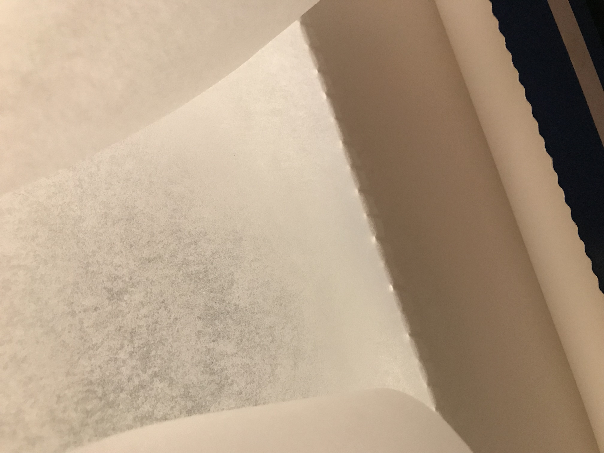

Week 11 Final Project Development
If you have followed the website you will find a lot of things that we used during the interdisciplinary project. The following pictures show a picture gallery with a short description of the development process of our Final Project. We call it "Inflatable Pressure Bandage". Since pictures are more interesting than 1000 words and you can follow the process very well Bildlich only a brief explanation is given to each step. Have fun watching and possibly rebuilding
Introduction:
Materials used:
Some things you should have at home the costs we have to spend on the materials we additionally purchased each next to the item
First had to measure the circumference of the leg and the length of the foot to be able to draw a template (pattern). And decide between the pattern.
The pattern was transferred to the vinyl and cut out. In the end we had two times two equal peaces.

The pattern for the inflatable area was cut out.
The sponges were cut to size and adjusted. The sponges serve as "air cushions" so that the air on the next step of the foot pulls back into the sole.

The pattern for the air area was cut to size and fixed in vinyl

The sponges were fixed with masking tape, so they do not slip when joining the vinyl.
The vinyl was welded together piece by piece with the ironing press, then with the iron and finally with the hot air blower.

Pattern was transferred to fabric and then cut out. The individual parts for the cover were sewn together

Velcro has been cut and sewed Velcro closure for hold on leg and foot was sewn on
Finished productInflatable with pressing function without using any additional energy


We hope you enjoyed our project and maybe it inspires you :). A big thank you to our teachers and professors. Thanks also for the constant assistance with problems :)